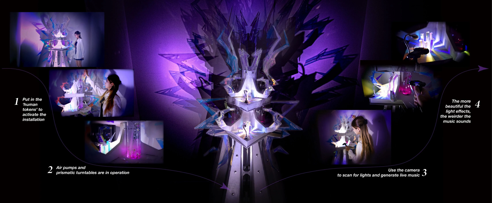

LABOUR TOWER
2025
An interactive kinetic sculpture about the human cost concealed beneath digital economies. Visitors feed the tower with coins representing units of labour; it responds with increasingly intense light and distorted sound.
- Type
- Interactive installation
- Tools
- Arduino, motors, light, sound, digital fabrication
